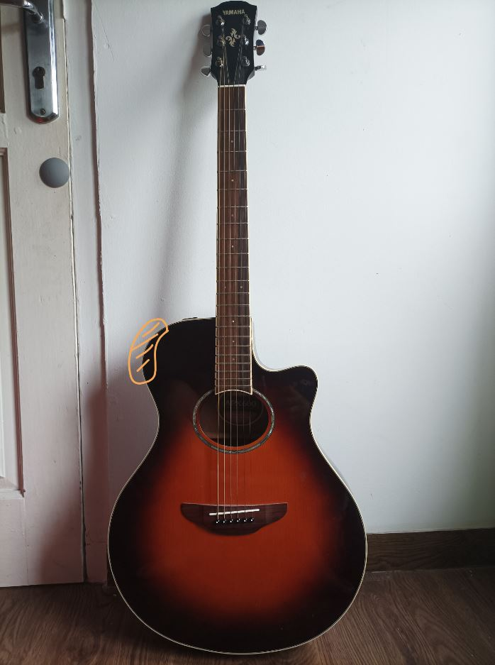

Fundamental Principles of Design
Signifiers are a way to communicate (signify) where the actions should take place. Signifiers differ from affordances, which determine what actions are possible.
When looking at an object, we search for clues or any sign that might help us cope and understand. It is the sign that is important, anything that might signify meaningful information.
Here are some examples:

From the previous article about affordances, we learned that this chair has a handle that can be grabbed comfortably while the person is sitting down. Our initial assumption was this chair only affords going up (higher) or going down (lower) based on how the handle is designed like a lever.
But as can be seen from the second picture, there are some “signs” or “instructions” of how we can apply more actions to the handle. These actions are pushing inward (closer) and pulling outward (further). Pushing inward results in locking the height position of the chair, which also results in the handle can't be used anymore (locked). Pulling outward releases the lock and the handle can be used again as normal.
We wouldn't know about this other action unless the sign or the instruction was there, at least not intuitively.
This guitar has additional features on one of its sides. When we are talking about affordances of these features, we are talking about what are the possible actions; which are rotating the button, sliding the slider, or clicking the button. But how would we know which is which? How would we know what does the rotating button affect? What is the slider for? We wouldn't, without the words above each element.
These "vol", "low", "mid", "high" texts signify what do these rotating buttons do. Not only that, each of these rotating buttons has two indicators of how far the buttons can rotate. The same concept also applies to the slider.
YouTube has several signifiers such as follows:
Cursor symbols can also be signifiers. We would expect something to be clickable when the cursor changes to the regular cursor or the hand cursor, but mostly the latter. We would expect something to be typeable when the cursor changes to 'I'-like shape.
Say there is a search box with a button beside it. The search box has a single word “Search” inside, and the button has a magnifying glass icon. These two elements afford typing and clicking.
Our intuition would say that we can do searching by typing some words inside the box then clicking the magnifying button to proceed. We would also expect (though this process happens quite fast and we would probably miss or ignore it) the cursor would change to the 'I' shape when we hover over the box then change to the hand shape when we hover over the button.
What would happen when the expectation does not meet? We would get confused for a moment and maybe try to click the box or the button several times instead of once to make sure that our actions are indeed correct.
This unnecessary confusion, though small, could lead to overall bad experience. Needing immediate and expected response also align with another design principle, which is called Feedback. (Feedback is covered in another article)
Reference(s): The Design of Everyday Things by Don Norman